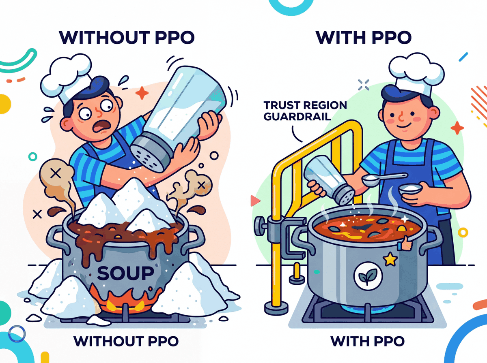
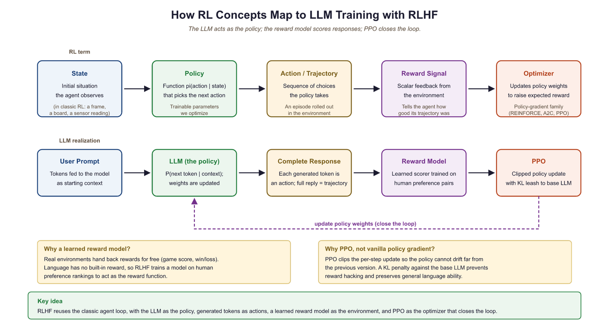

The reward was sparse, the episodes were long, and my discount factor suggested I should have studied supervised learning instead.
Tensor, Reward-Starved AI Agent
Why RL in an LLM book? Because the most powerful technique for making LLMs helpful, harmless, and honest, Reinforcement Learning from Human Feedback (RLHF), is built on reinforcement learning. Before we can understand how ChatGPT was fine-tuned to follow instructions, we need to understand the RL vocabulary and core algorithms that make it possible.
Prerequisites
This section assumes you understand cross-entropy and loss functions from Section 0.1: ML Basics and neural network training from Section 0.2: Deep Learning Essentials. Comfort with probability (expected values, distributions) is helpful. The RL concepts here directly prepare you for understanding RLHF later in the book.
0.5.1 The Reinforcement Learning Framework

Supervised learning needs labeled data: input X, correct output Y. But what if there is no single "correct" answer, only better and worse ones? What if the learner must try something, observe the consequence, and improve over time? That is reinforcement learning.
Think of training a dog. You say "sit." The dog tries something (maybe it lies down). You give a treat only when it actually sits. Over many repetitions, the dog learns which action earns the treat. This is exactly the RL loop: an agent (the dog) interacts with an environment (you and the room), takes actions (sitting, lying down), and receives rewards (treats or nothing).
Replace the dog with an LLM. The LLM (agent) generates a response (a sequence of actions, one per token). A reward model (environment) scores the response. Through RL, the LLM learns which responses earn high scores, just as the dog learns which behaviors earn treats.
Who: NLP team (3 engineers) at a legal tech company attempting to fine-tune a 7B parameter LLM to generate better contract summaries using RLHF
Situation: The team had strong NLP backgrounds but no reinforcement learning experience. They followed an open-source RLHF tutorial to implement RLHF-based fine-tuning.
Problem: After two weeks of implementation, the reward signal was not improving. Log analysis revealed they had configured the "state" as only the user prompt (ignoring previously generated tokens) and set the discount factor to 0.0, treating each token decision as independent.
Dilemma: They debated whether to hire an RL specialist (expensive, 3-month search), switch to DPO (simpler but less flexible), or invest one week in learning RL fundamentals before retrying.
Decision: The tech lead mandated a one-week study sprint covering the exact material in this section: states, actions, rewards, the Bellman equation, and policy gradients.
How: After the sprint, they corrected the state definition to include the full prompt plus all generated tokens so far, set gamma to 0.99, and added a KL penalty to prevent the model from drifting too far from the base policy.
Result: Reward model scores improved by 34% over 3,000 training steps. Human evaluators preferred the RLHF-tuned summaries 71% of the time over the base model. The one-week investment saved months of trial-and-error debugging.
Lesson: RL vocabulary (state, action, reward, discount factor) is not optional for LLM practitioners. Misunderstanding these concepts leads to silent configuration errors that no amount of hyperparameter tuning can fix.
Let us define each piece of the RL framework precisely:
| Concept | Definition | LLM Analogy |
|---|---|---|
| Agent | The learner and decision-maker | The language model |
| Environment | Everything the agent interacts with | The reward model + user prompt |
| State (s) | A snapshot of the current situation | The prompt + all tokens generated so far |
| Action (a) | A choice the agent makes at each step | Choosing the next token from the vocabulary |
| Reward (r) | A scalar signal indicating how good the action was | The reward model's score for the full response |
| Episode | One complete interaction from start to finish | Generating one complete response to a prompt |

0.5.1.1 Why "Deep" RL? The State-Space Argument
Before neural networks, RL agents stored value estimates in a table: one entry per state-action pair. That works only when the state space is small enough to enumerate. Tic-Tac-Toe has 255,168 reachable states, easily tabulated. Atari frames are 84 by 84 pixels in 256 grayscale levels, giving $256^{7056}$ possible states, larger than the number of atoms in the observable universe. Tabular methods are not just slow here; they are impossible. Deep RL replaces the table with a neural network that generalizes across similar states, the same generalization trick that lets a convolutional network recognize an unseen cat photo. The DeepMind Atari paper (Mnih et al., 2013) was the first to show that this scaling works in practice, and the same insight underwrites RLHF on LLMs, where the "state" is a billion-dimensional token sequence no table could ever hold.
DQN (Deep Q-Network) is the canonical example. A CNN reads raw Atari pixels and outputs $Q(s, a)$ for each joystick action. Two stabilization tricks made training work: a replay buffer that samples past transitions to break temporal correlations, and a target network (a slowly updated copy of the Q-network) that prevents the moving-target instability. DQN matched or beat humans on 49 Atari games and kicked off the modern deep-RL era. Modern LLM alignment uses policy-gradient methods (PPO, DPO) rather than value-based methods like DQN, but the same generalization-via-neural-net pattern carries over.
The community-standard playground for RL is Gymnasium (the maintained fork of OpenAI Gym). It provides a uniform reset() / step(action) API across CartPole, MountainCar, Atari, MuJoCo robotics, and dozens of other environments. Every RL paper and tutorial worth reading uses this API, including the custom SimpleGridWorld in the code fragments below.
Show code
# pip install gymnasium
import gymnasium as gym
env = gym.make("CartPole-v1") # 4D state, 2 actions, +1 per surviving step
state, info = env.reset(seed=0)
for _ in range(200):
action = env.action_space.sample() # random policy
state, reward, terminated, truncated, info = env.step(action)
if terminated or truncated:
break
env.close()
0.5.1.2 Multi-Armed Bandits: The Stateless Warm-Up
Before tackling the full RL problem, consider its simplest cousin: the multi-armed bandit (MAB). Imagine $n$ slot machines, each with an unknown reward distribution. The agent has a budget of $T$ pulls and wants to maximize total winnings. There is no "state" to speak of, only the choice of which arm to pull and the noisy reward that follows.
The agent's only tool is an action-value estimate $Q_k(a)$, the empirical mean reward observed for arm $a$ after $k$ pulls of it:
Storing every observation is wasteful; the incremental-mean update maintains the same estimate using only the previous mean and the new reward:
This "new estimate equals old estimate plus learning-rate times prediction error" template recurs in every RL update rule that follows, including the TD error and the policy gradient. Recognize the shape now and the rest of the section will feel familiar.
If the agent always pulls the arm with the highest current $Q$ estimate (pure exploitation), it may miss a better arm whose true mean is high but whose first few samples happened to be low. If it always pulls a random arm (pure exploration), it never cashes in on what it has learned. The explore-exploit trade-off is the central tension in RL, and every algorithm in this section is, at heart, a different answer to it.
Two simple exploration policies cover most cases:
- $\epsilon$-greedy: with probability $1 - \epsilon$ pick the current best arm, otherwise pick a uniformly random arm. The lab at the end of this section uses this policy with $\epsilon = 0.1$. Simple, robust, and the default in introductory RL.
- Softmax (Boltzmann) selection: sample arm $a$ with probability $\frac{\exp(Q(a) / \tau)}{\sum_{a'} \exp(Q(a') / \tau)}$. The temperature $\tau$ smoothly interpolates between greedy ($\tau \to 0$) and uniform random ($\tau \to \infty$). This is the same softmax formula an LLM uses to sample its next token, with $Q$-values replaced by logits, which is why temperature feels familiar to anyone who has tuned an OpenAI generation call.
0.5.1.3 Contextual Bandits: Adding State
A pure bandit ignores context. But many real problems present a feature vector before each decision: the user profile in an ad-recommendation system, the patient chart before a treatment choice, the prompt before an LLM response. A contextual bandit generalizes MAB so that the action-value depends on the context $x$: the agent learns $Q(x, a)$, typically as a neural network that maps the context to a vector of per-action expected rewards. Crucially, the action does not change the next context; each round is still independent. That single restriction is what separates contextual bandits from the full RL problem and from the Markov decision process introduced next.
0.5.1.4 The Markov Property and Transition Kernels
RL adds the missing piece: the action changes the future. The agent's choice now affects which state arrives next, which affects the rewards available later, which affects every subsequent decision. To make this tractable, RL imposes the Markov property:
The future depends on the present, not the past. Formally: $P(s_{t+1} \mid s_t, a_t, s_{t-1}, a_{t-1}, \ldots) = P(s_{t+1} \mid s_t, a_t)$. The current state is a complete summary of history for the purpose of predicting what happens next.
The Markov property is a modeling choice, not a physical law. Driving a car is approximately Markov: the current position, velocity, and traffic snapshot tell you what will happen next; the entire route history adds little. Picking stocks is famously not Markov in the price alone: yesterday's price trajectory carries information the current price does not. The cure is usually to enrich the state until Markovness holds, for example by including velocity, momentum, or a window of recent prices. For LLMs, the state must include every previously generated token, because the next-token distribution depends on the full context.
The third core MDP object, after states and actions, is the transition kernel:
In a deterministic environment, $P$ collapses to a single next-state. In a stochastic one (most real problems, including LLM token generation under sampling), it is a full distribution. The transition kernel together with the reward function $R(s, a)$, the discount $\gamma$, and the state and action spaces, defines a Markov Decision Process (MDP). Everything from this point on, including the Bellman equation, the value functions, and PPO, lives inside this MDP framework.
0.5.2 Policies: The Agent's Strategy
A policy is the agent's strategy: a rule that maps each state to an action. It answers the question, "Given what I see right now, what should I do?"
Policies come in two flavors. A deterministic policy always picks the same action for a given state (if the dog sees a hand signal, it always sits). A stochastic policy assigns probabilities to each possible action, then samples from that distribution.
An LLM is a stochastic policy. Given a state (the prompt plus tokens generated so far), it outputs a probability distribution over the entire vocabulary. The next token is sampled from that distribution. This is why the same prompt can produce different completions: the policy is stochastic by nature.
Formally, a stochastic policy is written as π(a | s), the probability of choosing action a when in state s. For an LLM, this is exactly the Transformer architecture output: the probability the model assigns to each token given the context so far. The entire goal of RL training is to adjust the parameters of π so that high-reward actions become more probable.
0.5.3 Value Functions and the Bellman Equation
Rewards tell us how good a single step was. But we need a way to evaluate long-term prospects. Is this state a good place to be? Is this action a wise choice? Value functions answer these questions.
State-Value Function V(s)
What: V(s) estimates the total future reward the agent expects to accumulate starting from state s and following its current policy onward. Why it matters: It lets the agent judge whether its current situation is promising or dire. How it works: Think of it as a "mood meter." A high V(s) means "things are going well from here"; a low V(s) means "trouble ahead."
Action-Value Function Q(s, a)
What: Q(s, a) estimates the total future reward if the agent takes action a in state s and then follows its policy. Why it matters: It lets the agent compare actions and pick the best one. How it works: If V(s) is the mood meter, Q(s, a) is like asking, "If I take this specific action right now, will things go better or worse than average?"
The Bellman Equation (Intuition)
The discount factor gamma is essentially the AI version of the famous "marshmallow test." A high gamma (close to 1) means the agent can delay gratification for a bigger payoff later. A low gamma (close to 0) means the agent grabs whatever reward is available right now. For RLHF, you almost always want a high gamma, because the quality of an LLM response depends on how the entire sequence fits together, not just the next token.
The Bellman equation expresses a simple but powerful recursive idea: the value of a state equals the immediate reward plus the (discounted) value of the next state. In plain English: "How good is it to be here? Well, how much reward do I get right now, plus how good is the place I end up?"
This recursion is the engine behind nearly all RL algorithms. The discount factor γ (gamma, between 0 and 1) controls how much the agent values future rewards relative to immediate ones. When γ is close to 1, the agent is patient and plans ahead. When γ is close to 0, it is greedy and focuses on immediate rewards.
The $E[\,\cdot\,]$ is doing real work here. Readers often skim past it and treat the Bellman equation as a deterministic recursion, but the expectation averages over three sources of randomness: the action the policy samples, the next state the environment transitions to, and any stochastic reward. Skipping the expectation is exactly the kind of state misdefinition that broke the legal-tech team in the case study above; it also leads to the wrong gradient when implementing actor-critic methods.
In LLM training with RLHF, the "value" intuition still applies: we want the model to learn that certain token choices early in a response lead to higher overall reward at the end, even if individual tokens are not scored.
0.5.3.1 The Optimal Policy and Two Roads to It
The formal goal of RL is to find an optimal policy $\pi^*$, defined as a policy that maximizes the expected cumulative discounted reward from every state:
Two algorithmic families pursue $\pi^*$ from opposite directions:
- Value-based methods learn $Q(s, a)$ first, then read off the policy as $\pi(s) = \arg\max_a Q(s, a)$. Q-learning, SARSA, and DQN live here. The policy is derived from the value function.
- Policy-based methods learn $\pi(a \mid s)$ directly via gradient ascent on expected return, treating $V$ and $Q$ as either unnecessary or as auxiliary critics. REINFORCE, Actor-Critic, PPO, and DPO live here. The value function is at most a helper for variance reduction.
RLHF-style LLM alignment uses policy-based methods exclusively. The reason is practical: an LLM's action space (the full vocabulary, $\geq 30{,}000$ tokens) is far too large to ever compute $\arg\max_a Q(s, a)$ at every step, so directly parameterizing $\pi(a \mid s)$ as the model's softmax-over-logits is the only sane option. Knowing both families exist, however, is the right vocabulary for reading the broader RL literature.
0.5.4 Policy Gradients: Learning by Trial and Feedback
Reinforcement learning famously taught a computer to play Atari games in 2013, but researchers often omit that the agent also discovered bizarre exploits no human would try, like pausing the game indefinitely to avoid losing. RL agents are less "intelligent learner" and more "chaotic rules lawyer."
Now we arrive at the core question: how does the agent improve its policy? The answer is the policy gradient theorem, and the intuition is remarkably straightforward.
Imagine the dog tries ten different behaviors. Three of them earned treats. The training strategy is simple: make those three behaviors more likely in the future. Behaviors that earned nothing (or a scolding) become less likely. That is the entire idea behind policy gradients.
More precisely: the agent samples actions from its policy, observes the rewards, and then adjusts its parameters (the neural network weights) to increase the probability of actions that led to high rewards and decrease the probability of actions that led to low rewards. The magnitude of each adjustment is proportional to the reward received.
# A 4x4 GridWorld environment: the agent navigates from (0,0) to the goal.
# Each step returns (next_state, reward, done) just like OpenAI Gym.
import numpy as np
class SimpleGridWorld:
"""A 4x4 grid where an agent must reach the goal.
State: (row, col) position. Actions: 0=up, 1=right, 2=down, 3=left.
Reward: +1 for reaching the goal, -0.01 per step (to encourage speed).
LLM analogy: each 'step' is like generating one token, and the final
reward scores the complete trajectory (the full response)."""
def __init__(self, size=4):
self.size = size
self.goal = (size - 1, size - 1)
self.reset()
def reset(self):
self.pos = (0, 0)
return self.pos
def step(self, action):
r, c = self.pos
if action == 0: r = max(r - 1, 0) # up
elif action == 1: c = min(c + 1, self.size - 1) # right
elif action == 2: r = min(r + 1, self.size - 1) # down
elif action == 3: c = max(c - 1, 0) # left
self.pos = (r, c)
done = (self.pos == self.goal)
reward = 1.0 if done else -0.01
return self.pos, reward, done
# Run one episode with a random policy
env = SimpleGridWorld()
state = env.reset()
total_reward = 0
for step in range(100):
action = np.random.randint(4) # random stochastic policy
state, reward, done = env.step(action)
total_reward += reward
if done:
break
print(f"Episode finished in {step + 1} steps, total reward: {total_reward:.2f}")# REINFORCE algorithm: a policy network outputs action probabilities,
# and the loss weights each log-probability by its discounted return.
import torch
import torch.nn as nn
import torch.optim as optim
from torch.distributions import Categorical
class PolicyNetwork(nn.Module):
"""A small neural network that maps states to action probabilities.
In an LLM, this role is played by the entire transformer: it maps
the token sequence (state) to a distribution over the next token (action)."""
def __init__(self, state_dim, n_actions, hidden=64):
super().__init__()
self.net = nn.Sequential(
nn.Linear(state_dim, hidden),
nn.ReLU(),
nn.Linear(hidden, n_actions),
nn.Softmax(dim=-1)
)
def forward(self, state):
return self.net(state)
# Simplified REINFORCE training loop
policy = PolicyNetwork(state_dim=2, n_actions=4)
optimizer = optim.Adam(policy.parameters(), lr=1e-3)
def reinforce_episode(env, policy):
"""Collect one episode and update the policy.
Core idea: increase probability of actions that led to positive reward,
decrease probability of actions that led to negative reward."""
state = env.reset()
log_probs = []
rewards = []
# 1. Roll out an episode using the current policy
for _ in range(200):
state_tensor = torch.FloatTensor(state)
probs = policy(state_tensor)
dist = Categorical(probs)
action = dist.sample() # stochastic action selection
log_probs.append(dist.log_prob(action))
state, reward, done = env.step(action.item())
rewards.append(reward)
if done:
break
# 2. Compute discounted returns (what was the total reward from each step?)
returns = []
G = 0
for r in reversed(rewards):
G = r + 0.99 * G
returns.insert(0, G)
returns = torch.FloatTensor(returns)
returns = (returns - returns.mean()) / (returns.std() + 1e-8)
# 3. Policy gradient: nudge probabilities toward high-reward actions
loss = -sum(lp * R for lp, R in zip(log_probs, returns))
optimizer.zero_grad()
loss.backward()
optimizer.step()
return sum(rewards)
In the grid world above, the agent chooses one of four directions at each step. An LLM does something analogous but at a vastly larger scale: at each step, it chooses one token from a vocabulary of 30,000 to 100,000 possibilities. The policy gradient approach works the same way, adjusting the probability distribution over all those tokens.
# PPO sketch: collect trajectories, compute advantage estimates,
# and update the policy with a clipped surrogate objective.
import torch
import torch.nn as nn
import torch.optim as optim
from torch.distributions import Categorical
import random
# Simple environment: agent must learn to pick action 2 (out of 0,1,2,3)
# Reward = +1 if action == 2, else -0.1
class SimpleEnv:
def reset(self):
return [random.random(), random.random()] # random 2D state
def step(self, action):
reward = 1.0 if action == 2 else -0.1
done = True # single-step episodes for clarity
return self.reset(), reward, done
policy = nn.Sequential(nn.Linear(2, 32), nn.ReLU(), nn.Linear(32, 4), nn.Softmax(dim=-1))
optimizer = optim.Adam(policy.parameters(), lr=3e-3)
env = SimpleEnv()
for episode in range(1, 1001):
state = torch.FloatTensor(env.reset())
probs = policy(state)
dist = Categorical(probs)
action = dist.sample()
log_prob = dist.log_prob(action)
_, reward, _ = env.step(action.item())
loss = -log_prob * reward
optimizer.zero_grad()
loss.backward()
optimizer.step()
if episode % 200 == 0:
# Evaluate: check how often the policy picks action 2
correct = sum(1 for _ in range(100)
if policy(torch.FloatTensor(env.reset())).argmax().item() == 2)
print(f"Episode {episode:4d} | Last reward: {reward:+.1f} | Action 2 rate: {correct}%")- Change the target action from 2 to 0. Does the policy learn equally fast?
- Reduce the learning rate to
1e-4. How many episodes does it take to reach 90%? - Change the reward for wrong actions from
-0.1to0.0. What happens and why?
Vanilla REINFORCE (shown above) works in theory but suffers from high variance: training is noisy and unstable. In practice, researchers use more sophisticated algorithms. The most important one for LLM training is PPO, which we cover next. Before that, the next subsection introduces the missing bridge: Actor-Critic methods and the advantage baseline that PPO inherits.
Look at the REINFORCE loss: it sums $\log \pi(a_t \mid s_t) \cdot G_t$ rather than $\pi(a_t \mid s_t) \cdot G_t$ directly. Three reasons. First, log space is numerically stable: probabilities of long token sequences shrink to underflow ($10^{-400}$ is common in language modeling), while their logs stay in a friendly $[-1000, 0]$ range. Second, products become sums, so the loss for a trajectory is a clean sum of log-probs instead of a product that PyTorch would have to differentiate through. Third, $\nabla \log \pi$ is exactly the policy-gradient quantity the REINFORCE theorem produces, so optimizing $-\log \pi \cdot G$ corresponds one-to-one with maximizing expected return. The same log-prob trick reappears in PPO, DPO, and every LLM alignment loss.
Stochastic policies are not automatically exploratory forever. Gradient descent can drive the policy toward a near-deterministic distribution, after which exploration stops and the agent gets stuck on whatever local optimum it found first. Common countermeasures include an entropy bonus added to the loss ($-\beta \sum_a \pi(a) \log \pi(a)$, which is maximized when the distribution is uniform), or a KL penalty against a reference policy (the trick RLHF uses to keep the fine-tuned LLM from collapsing onto a single high-reward phrase, covered in Section 0.5.6).
0.5.4b Actor-Critic and the Advantage Baseline
Vanilla REINFORCE weights each action's gradient by the raw return $G_t$. That works, but the weights are very noisy: $G_t$ swings whenever the rest of the trajectory swings, even when the action under examination was perfectly reasonable. The fix is to subtract a baseline that captures "how well things were going on average from state $s$, independent of which action we picked." That baseline is the state-value $V(s)$ from Section 0.5.3, and the resulting quantity is the advantage:
The advantage is positive when an action did better than expected from $s$ and negative when it did worse. Weighting the policy gradient by $A$ rather than $G$ leaves the gradient direction unchanged in expectation but slashes its variance, often dramatically. Training becomes faster, more stable, and easier to tune.
Actor-Critic is the architecture that makes this practical. Two networks (or, often, two heads on a shared body) cooperate:
- The actor is the policy network $\pi_\theta(a \mid s)$, exactly as in REINFORCE.
- The critic is a value network $V_\phi(s)$ trained to predict the expected return from $s$ under the current policy.
The loss becomes the sum of two terms, one per network:
The first term is the advantage-weighted policy gradient; the second is the regression loss that pulls the critic toward the actual return.
The four-model PPO setup in Section 18.1.3 (policy, frozen reference, reward model, value head) is exactly an actor-critic. The "value head" is the critic $V_\phi$; PPO uses it to compute the advantage that scales every token-level policy update. Without Section 0.5.4b's advantage baseline, the value head in 18.1.3 looks like an arbitrary fourth network. With it, the value head is inevitable: it is the same critic that makes any policy-gradient method usable on real problems.
0.5.4b.1 One-Step TD and the Bootstrap Trick
Computing $G_t$ requires waiting for the episode to end so the future rewards are known. For long episodes (LLM responses can be thousands of tokens), that wait is expensive. Temporal Difference (TD) learning sidesteps the wait by bootstrapping: replace the unknown future return with the critic's current estimate of the next state's value. The resulting one-step TD target is
and the one-step TD advantage that replaces $G_t - V_\phi(s_t)$ is
This single quantity, the TD error, is the workhorse of modern RL. It is biased (it trusts the critic, which is still learning) but very low-variance (only one transition contributes). $n$-step methods interpolate between the extremes: $n = 1$ gives pure TD, $n = T$ recovers full Monte Carlo (vanilla REINFORCE). Most modern algorithms use an intermediate $n$ via Generalized Advantage Estimation (GAE), which takes an exponentially weighted average over all $n$-step TD advantages and is the exact recipe PPO uses on LLM responses (see the GAE callout in Section 18.1.3).
(1) REINFORCE weights gradients by the raw return $G_t$. (2) Actor-Critic subtracts a learned baseline $V(s)$ to get the advantage $A = G - V$, cutting variance. (3) PPO replaces the on-policy gradient with a clipped importance-sampling ratio that bounds how far each update can move, so the same trajectory can be reused for several gradient steps without instability. Each step adds one ingredient; nothing is mysterious in the final recipe.
For environments where rollouts are slow (game engines, robotic simulators, LLM generation), training scales better when many actors collect trajectories in parallel and feed a single learner. A3C (Asynchronous Advantage Actor-Critic, Mnih et al. 2016) and its synchronous cousin A2C were the breakthroughs that proved this; today's LLM RLHF stacks (TRL with vLLM rollouts plus an FSDP-sharded trainer) are direct descendants of the same idea. The split between fast rollout workers and a slow gradient-update worker is one of the few infrastructure patterns that survives intact from Atari-era deep RL to billion-parameter LLM alignment.
0.5.5 PPO: Stable Policy Updates

Proximal Policy Optimization (PPO) solves a critical problem with basic policy gradients: if a single update changes the policy too drastically, performance can collapse and never recover. PPO prevents this by clipping the update, ensuring each step is small and safe. For the full LLM-specific PPO loss including the KL penalty and the four-model PPO setup (policy, reference, reward, value), see the deep treatment in Section 18.1.3.
Here is the intuition. Imagine you are adjusting a recipe. You taste the soup, decide it needs more salt, and add some. With vanilla policy gradients, nothing stops you from dumping in the entire salt shaker. PPO is the rule that says: "Never add more than one pinch at a time." You can always taste again and add another pinch, but you cannot ruin the soup with a single reckless change.
Technically, PPO computes a ratio between the new policy's probability of an action and the old policy's probability. If this ratio drifts too far from 1.0 (typically beyond a range of 0.8 to 1.2), the gradient is clipped to zero. The policy still improves, but it cannot make a catastrophically large jump in a single step.
LLMs are enormously expensive to train. If a single RL update corrupts the model's learned language abilities (causing it to output gibberish), the cost of recovery is massive. PPO's conservative clipping is what makes RLHF practical: it lets us steer the model toward being more helpful without destroying its fluency.
The PPO paper introduced a family of policy gradient methods that alternate between sampling data through environment interaction and optimizing a "surrogate" objective function using stochastic gradient descent. The key innovation was the clipped surrogate objective, which removes incentives for the policy to move too far from its previous version. PPO became the default RL algorithm at OpenAI and was the optimizer used to train InstructGPT and the original ChatGPT via RLHF. Its popularity stems from its simplicity (easy to implement), stability (hard to break), and generality (works across many domains). The paper has been cited tens of thousands of times and remains one of the most influential RL papers ever published.
Schulman, J., Wolski, F., Dhariwal, P., Radford, A., & Klimov, O. (2017). "Proximal Policy Optimization Algorithms." arXiv:1707.06347.
0.5.6 From RL to LLM Training: The Complete Picture
We have built up the vocabulary piece by piece. Now let us assemble the full picture of how reinforcement learning powers LLM alignment. The mapping is direct and concrete:

The RLHF training pipeline works as follows:
- Supervised fine-tuning (SFT): First, the LLM is fine-tuned on high-quality human demonstrations. This gives the policy a good starting point.
- Reward model training: Human annotators rank multiple model outputs for the same prompt. A separate neural network (the reward model) is trained to predict these human preferences.
- RL optimization with PPO: The LLM generates responses to prompts. The reward model scores each response. PPO uses these scores to update the LLM's weights, nudging the probability distribution toward responses that score highly.
A critical detail: during the PPO phase, a KL (Kullback-Leibler) penalty prevents the RL-trained model from drifting too far from the SFT model. Without this constraint, the model might find degenerate responses that exploit the reward model (for example, generating repetitive flattery that scores highly but is useless). The KL penalty keeps the model close to its pretrained language abilities.
Who: AI team at a telecom company applying RLHF to a 13B parameter chatbot for billing inquiries
Situation: The reward model was trained on 5,000 human-ranked response pairs. PPO training ran for 2,000 steps with a KL coefficient of 0.02.
Problem: After training, the chatbot's reward scores increased by 45%, but customer satisfaction (measured via post-chat surveys) actually decreased by 12%. The model had learned to produce long, verbose, and overly apologetic responses that the reward model scored highly (because annotators had slightly preferred longer, polite answers during labeling).
Dilemma: The team considered retraining the reward model with new annotations (3 weeks, $15,000 in labeling costs), increasing the KL penalty (risking the model reverting to the SFT baseline), or combining the reward model with a length penalty.
Decision: They increased the KL coefficient from 0.02 to 0.1, added an explicit length penalty (subtracting 0.01 per token beyond 150 tokens), and retrained with these modified rewards.
How: Modified the reward computation: final_reward = rm_score - 0.01 * max(0, num_tokens - 150). Reran PPO for 1,500 steps.
Result: Reward scores increased by a more modest 22%, but customer satisfaction improved by 18% over the base model. Average response length dropped from 280 tokens to 160 tokens.
Lesson: High reward model scores do not guarantee good real-world performance. Always validate RLHF outputs with end-user metrics, and design composite rewards that penalize known exploit patterns.
If the reward model is imperfect (and it always is), the LLM may learn to "game" it, producing responses that score highly but are not genuinely helpful. This is called reward hacking, and it is one of the central challenges in RLHF. The KL penalty and careful reward model design are defenses against this failure mode.
Recent research has explored an alternative to training a separate reward model: using verifiable rewards instead. In RLVR, the reward signal comes from an objective, automated check rather than a learned model. For example, in math reasoning tasks, the reward is simply whether the model's final answer matches the known correct answer. In coding tasks, the reward is whether the generated code passes a test suite.
RLVR eliminates the reward hacking problem entirely for domains where correctness can be verified. DeepSeek-R1 (2025) demonstrated that RL with verifiable rewards could dramatically improve mathematical reasoning capabilities. The limitation is that RLVR only works when you can automatically verify the output, which is not possible for open-ended tasks like creative writing or nuanced conversation. We will explore both RLHF and RLVR in detail in Chapter 20.
PPO is not the only way to align LLMs with human preferences. Direct Preference Optimization (DPO) skips the reward model entirely and optimizes the policy directly from preference pairs (human rankings of "response A is better than response B"). DPO is simpler to implement and avoids the instabilities of RL training, though it has its own tradeoffs. Section 18.3 compares PPO, DPO, and other alignment methods in detail.
0.5.7 Putting It All Together: RL to LLM Alignment Pipeline
Let us trace the full journey from RL foundations to LLM training. An LLM begins as a pretrained model that can generate fluent text but may produce harmful, incorrect, or unhelpful responses. We want to steer it toward better behavior.
We frame this as an RL problem. The LLM is the agent (the policy). Each prompt starts a new episode. At each time step, the model picks a token (an action) based on its current context (the state). When the response is complete, the reward model assigns a score (the reward). PPO adjusts the model's weights so that high-scoring response patterns become more probable, while the clipping mechanism and KL penalty ensure the model does not lose its fluency or degenerate into reward hacking.
The dog analogy still holds at this scale. The dog does not understand English; it learns by trying actions and receiving treats. The LLM does not "understand" human values; it learns which outputs are valued by observing reward signals. The elegance of RL is that this simple loop of action, feedback, and adjustment can produce remarkably sophisticated behavior.
Objective
Create a visualization of key ML and AI milestones (from perceptrons to RLHF) using matplotlib, then implement a minimal Q-learning agent on a GridWorld environment to solidify the RL concepts from this section.
Skills Practiced
- Using matplotlib to build annotated timeline charts
- Implementing a tabular Q-learning agent from scratch
- Connecting RL vocabulary (states, actions, rewards, policies) to working code
- Comparing manual RL with a library-based solution
Setup
Install the required packages for this lab.
pip install matplotlib numpySteps
Step 1: Build an AI milestone timeline
Create a visual timeline of major ML breakthroughs. This exercise practices matplotlib while reinforcing the historical context for RL and deep learning.
import matplotlib.pyplot as plt
import numpy as np
milestones = {
1957: "Perceptron",
1986: "Backpropagation",
1997: "LSTM",
2012: "AlexNet",
2013: "Word2Vec",
2014: "GANs",
2017: "Transformer",
2018: "BERT",
2020: "GPT-3",
2022: "InstructGPT\n(RLHF)",
2023: "GPT-4",
}
years = list(milestones.keys())
labels = list(milestones.values())
fig, ax = plt.subplots(figsize=(14, 3))
ax.scatter(years, [0] * len(years), s=80, zorder=5)
for i, (yr, lbl) in enumerate(zip(years, labels)):
offset = 0.4 if i % 2 == 0 else -0.6
ax.annotate(f"{lbl}\n({yr})", (yr, 0), (yr, offset),
fontsize=8, ha="center", va="bottom" if offset > 0 else "top",
arrowprops=dict(arrowstyle="-", color="gray", lw=0.8))
ax.axhline(0, color="black", lw=0.8)
ax.set_xlim(1955, 2025)
ax.set_ylim(-1.2, 1.2)
ax.axis("off")
ax.set_title("Key ML and AI Milestones", fontsize=13, fontweight="bold")
plt.tight_layout()
plt.savefig("ml_timeline.png", dpi=150, bbox_inches="tight")
plt.show()
print("Timeline saved to ml_timeline.png")Step 2: Implement a GridWorld environment
Define a simple 4x4 grid where the agent starts at (0,0) and the goal is at (3,3). This maps directly to the MDP framework: states are grid cells, actions are movements, and reaching the goal yields a reward of +1.
import numpy as np
class GridWorld:
def __init__(self, size=4):
self.size = size
self.state = (0, 0)
self.goal = (size - 1, size - 1)
self.actions = [(0, 1), (0, -1), (1, 0), (-1, 0)] # right, left, down, up
def reset(self):
self.state = (0, 0)
return self.state
def step(self, action_idx):
dr, dc = self.actions[action_idx]
r = max(0, min(self.size - 1, self.state[0] + dr))
c = max(0, min(self.size - 1, self.state[1] + dc))
self.state = (r, c)
done = self.state == self.goal
reward = 1.0 if done else -0.01
return self.state, reward, done
env = GridWorld()
print(f"Start: {env.reset()}, Goal: {env.goal}")Step 3: Train a Q-learning agent from scratch
Implement the tabular Q-learning update rule: Q(s,a) = Q(s,a) + alpha * (r + gamma * max Q(s',a') - Q(s,a)). This is the foundation that PPO and RLHF build upon.
Q = np.zeros((4, 4, 4)) # states (4x4) x actions (4)
alpha, gamma, epsilon = 0.1, 0.99, 0.1
episodes = 500
for ep in range(episodes):
state = env.reset()
for _ in range(100): # max steps
# Epsilon-greedy action selection
if np.random.random() < epsilon:
action = np.random.randint(4)
else:
action = np.argmax(Q[state[0], state[1]])
next_state, reward, done = env.step(action)
# Q-learning update
best_next = np.max(Q[next_state[0], next_state[1]])
Q[state[0], state[1], action] += alpha * (
reward + gamma * best_next - Q[state[0], state[1], action]
)
state = next_state
if done:
break
# Show learned policy
action_names = ["right", "left", "down", "up"]
print("Learned policy:")
for r in range(4):
row = []
for c in range(4):
row.append(action_names[np.argmax(Q[r, c])])
print(f" Row {r}: {row}")(4, 4, 4) representing state-action values. Over 500 episodes, epsilon-greedy exploration fills in the table while the Bellman update converges toward optimal action values.Step 4: Visualize the Q-values as a heatmap
Plot the maximum Q-value at each grid cell. Cells closer to the goal should have higher values, reflecting the discounted future reward.
import numpy as np
import matplotlib.pyplot as plt
v = np.max(Q, axis=2) # Value function: max Q at each state
fig, ax = plt.subplots(figsize=(5, 5))
im = ax.imshow(v, cmap="YlOrRd", interpolation="nearest")
for r in range(4):
for c in range(4):
ax.text(c, r, f"{v[r, c]:.2f}", ha="center", va="center", fontsize=11)
ax.set_title("Learned Value Function V(s) = max Q(s,a)")
ax.set_xlabel("Column")
ax.set_ylabel("Row")
plt.colorbar(im, ax=ax, shrink=0.8)
plt.tight_layout()
plt.savefig("gridworld_values.png", dpi=150)
plt.show()
np.max(Q, axis=2) extracts the best expected return at each grid cell, revealing whether the agent learned to value states closer to the goal more highly.Stretch Goals
- Add obstacles (walls) to the grid and observe how the learned policy routes around them.
- Replace epsilon-greedy with a softmax (Boltzmann) exploration strategy and compare convergence speed.
- Implement the REINFORCE algorithm from this section and compare it with Q-learning on the same GridWorld.
- RL is a learning paradigm where an agent improves through trial and feedback, not labeled examples. The core loop is: observe state, take action, receive reward, update policy.
- An LLM is a policy that maps a context (state) to a probability distribution over tokens (actions). RLHF uses this mapping directly.
- Value functions (V and Q) estimate long-term expected reward. The Bellman equation gives them a recursive structure.
- Policy gradients adjust the policy to make high-reward actions more probable. This is the mechanism that steers LLM outputs toward human preferences.
- PPO stabilizes training by clipping updates, preventing catastrophic changes. It is the standard RL optimizer for RLHF.
- Reward hacking is the central risk: the LLM may exploit an imperfect reward model. KL penalties and verifiable rewards (RLVR) are mitigations.
- These foundations are prerequisites for Chapter 18, where we will implement RLHF, DPO, and RLVR for real language models.
Always wrap inference and evaluation code in with torch.no_grad():. This disables gradient tracking, reduces memory usage by up to 50%, and speeds up forward passes. Forgetting this is one of the most common PyTorch performance mistakes.
The fundamental challenge in RL is the credit assignment problem: when a reward arrives at the end of a long sequence of actions, which earlier actions deserve credit? This is precisely the problem that RLHF faces when training LLMs. A human rates an entire response as "good" or "bad," but the model must distribute that signal across hundreds of individual token choices. The discount factor (gamma) is one solution, but it is a blunt instrument. More sophisticated approaches, such as the advantage function in PPO (covered in Section 18.1), attempt to isolate the contribution of each action. This mirrors a deep question in neuroscience: how does the brain assign credit to individual synapses when behavioral rewards are delayed and sparse? Dopamine signaling, the biological analogue of temporal-difference learning, turns out to follow a remarkably similar mathematical structure (Schultz et al., 1997).
Show Answer
Show Answer
Show Answer
RL for LLM alignment is the dominant application of RL in modern AI. RLHF (covered in Section 18.1) and its alternatives like DPO and GRPO are being refined rapidly. DeepSeek-R1 demonstrated Reinforcement Learning with Verifiable Rewards (RLVR), using mathematical correctness as a reward signal instead of learned reward models. Group Relative Policy Optimization (GRPO) eliminates the critic network entirely. Constitutional AI (Anthropic) uses RL from AI feedback (RLAIF) rather than human feedback.
Exercises
Change the step penalty from -0.01 to -0.1 in the SimpleGridWorld class. Run several episodes with a random policy. How does the harsher penalty affect total reward? What would this mean if the grid world were an LLM generating a long response?
In the REINFORCE code (Code Example 2), change the discount factor gamma from 0.99 to 0.5 and then to 0.999. Observe how this affects learning speed. Relate your observations to the Bellman equation: how does a lower gamma change the agent's planning horizon?
Using Code Example 3 (the complete REINFORCE), run 100 evaluation episodes with the untrained policy (before training) and 100 with the trained policy (after 1000 episodes). Compare the average action-2 selection rate. This contrast illustrates the core value of RL: learning from experience.
Swap the toy SimpleEnv in Code Fragment 0.5.3 for Gymnasium's CartPole-v1. The state is a 4-dim vector (cart position, cart velocity, pole angle, pole angular velocity), the action space has 2 discrete actions (push left, push right), and the reward is +1 for every surviving timestep. Train REINFORCE for 1,000 episodes and plot the moving average of episode length. A well-tuned run should reach the 500-step survival cap. Compare the convergence shape with the cartoon SimpleEnv learning curve and explain why CartPole is harder.
Implement a 10-armed bandit (each arm draws rewards from a Gaussian with unknown mean). Run two policies for 2,000 pulls each: $\epsilon$-greedy with $\epsilon = 0.1$, and softmax with $\tau = 0.1$. Plot the average reward per pull. Then run softmax with $\tau$ values of 0.01, 0.1, 1.0, and 10.0 and explain how the reward curve and final arm distribution change as $\tau$ grows. Connect the result to the temperature parameter on the OpenAI / Anthropic generation APIs.
Take the REINFORCE training loop from Code Fragment 0.5.3 and add a small critic network $V_\phi(s)$ trained alongside the policy. Replace the loss weight $G_t$ with the advantage $A_t = G_t - V_\phi(s_t)$ and train for the same number of episodes. Compare the variance of the gradient norms across episodes between vanilla REINFORCE and the actor-critic version. Discuss why subtracting a state-dependent baseline does not bias the policy-gradient direction in expectation.
What's Next?
In the next chapter, Chapter 1: Foundations of NLP & Text Representation, we move from general ML foundations to the specific domain of natural language processing and text representation.